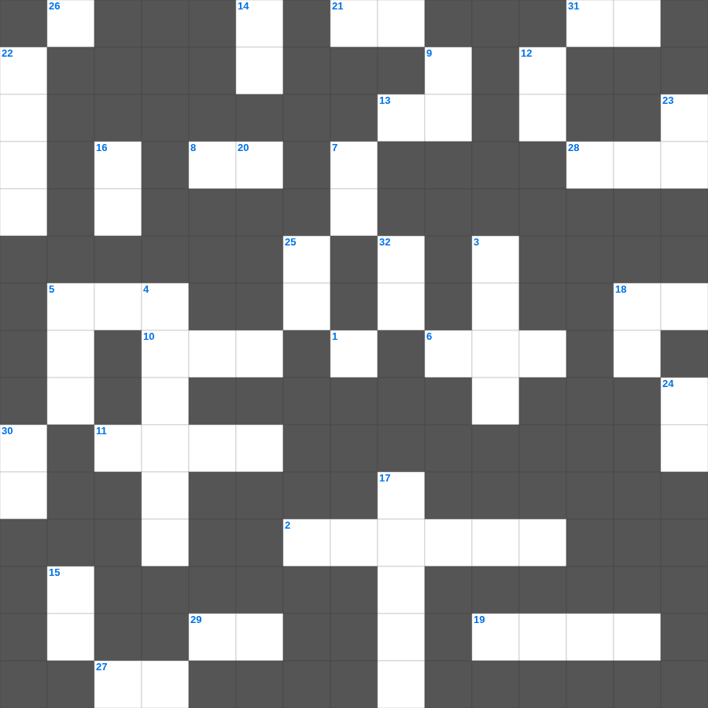

예레미야 마스터 100 (2/2)
📌 서비스 정의
십자가로세로는 교회 주보와 주일학교에서 사용할 수 있는 성경 기반 가로세로 퍼즐 서비스입니다. 성경 인물, 사건, 핵심 구절을 바탕으로 제작되었습니다. 온라인 풀이 및 인쇄 기능을 제공합니다.
📖 예레미야란?
예레미야는 유다의 멸망을 눈물로 예언한 '눈물의 선지자'의 메시지를 담은 책으로, 회개의 촉구와 새 언약에 대한 소망을 함께 전합니다.
📚 예레미야의 주요 사건·주제
예레미야의 소명 · 거짓 선지자들과의 대립 · 유다의 멸망 예언 · 새 언약 예언(예레미야 31장) · 예루살렘 함락
무료로 즐기는 예레미야 예레미야 말씀 퀴즈! 35개의 힌트로 구성된 가로세로 낱말 퍼즐입니다. PC와 모바일 모두 지원되며, 정답을 바로 확인할 수 있어 혼자서도 쉽게 풀 수 있습니다.

📝 가로 힌트
1. 그의 안에 산다고 하는 자는 그가 행하시는 대로 자기도 이것할지니라
2. 길가, 돌짝밭, 가시떨기, 좋은 땅 이야기
5. 베드로가 욥바에서 살려낸 여제자 (다비다)
6. 유다 장로들이 대적들에게 자신들을 소개한 말 '하늘과 땅의 이것의 종'
8. 내가 너희에게 꾸준히 일렀으나 너희가 이것 하지 아니하였느니라
10. 대제사장이 일 년에 한 번 홀로 들어가는 곳
11. 요담의 비유에 등장하는 가장 쓸모없는 나무
13. 하나님이 이 네 소년에게 학문을 주시고 모든 서적을 깨닫게 하시고 이것을 주셨으니
18. 요한이서 1장 9절: 교훈 안에 거하는 사람은 아버지와 아들을 어떻게 하나
19. 예레미야가 진흙 구덩이에 빠졌을 때 그를 구해준 구스인 내시
21. 자기 수치의 거품을 뿜는 바다의 거친 이것이요
26. 사망아 너의 승리가 어디 있느냐 사망아 네가 쏘는 것이 어디 있느냐 사망이 쏘는 것은 이것이요
27. 오히려 너희가 그리스도의 이것에 참여하는 것으로 즐거워하라
28. 내 눈의 흐르는 눈물이 이것 아니하고 쉬지 아니함이여
29. 인구 조사 대상 '이십 세 이상으로 이것에 나갈 만한 자'
31. 백성들이 하나님께 약속한 것 '이방 사람과 이것하지 않겠다'
📝 세로 힌트
3. 초막절을 지키기 위해 산에서 가져온 가지 중 하나
4. 이새의 줄기에서 한 싹이 나며 그 뿌리에서 한 이것이 나서 결실할 것이요
5. 부지중에 살인한 자가 피신하는 성읍
7. 좁은 문으로 들어가기를 이것 하라
9. 마지막 인사: 이것이 너희와 함께 있을지어다
10. 제사장의 축복 기도 '여호와는 네게 복을 주시고 너를 이것하시기를'
12. 십자가 위에서의 기도: 아버지 저들을 이것 하여 주옵소서 자기들이 하는 것을 알지 못함이니이다
14. 유다서 1장 4절: 하나님의 은혜를 무엇으로 바꾸는 자들
15. 누구든지 말씀을 듣고 행하지 아니하면 그는 거울로 자기의 생긴 이것을 보는 사람과 같아서
16. 하나님은 무엇을 미워하시며 의복으로 폭력을 가리는 자를 미워하시는가
17. 이방 여인과 결혼한 자들을 책망하며 느헤미야가 한 행동
18. 성전 완공 후 제사장과 레위인을 세운 기준 '이것의 책에 기록된 대로'
20. 그리스도께서 우리를 자유롭게 하려고 자유를 주셨으니 그러므로 굳건하게 서서 다시는 이것의 멍에를 메지 말라
22. 여리고 함락 직전 제사장들이 분 이것
23. 부활하신 예수를 만난 두 제자가 이 소식을 알렸으나 나머지 제자들이 이것 하지 않음
24. 내가 주께 감사함은 나를 지으심이 이것하고 기묘하심이라
25. 사람이 교만하면 낮아지게 되겠고 마음이 겸손하면 이것을 얻으리라
30. 바울이 자기 때에 전도로 나타내신 것
32. 제사장이 백성을 위해 행하는 것
🧩 이 퍼즐에서 배우는 내용
이 퍼즐은 예레미야 마스터 100 (2/2)의 핵심 단어와 개념을 자연스럽게 복습할 수 있도록 구성되었습니다. 주일학교 수업이나 개인 성경공부에서 학습 내용을 점검하는 용도로 바로 활용할 수 있습니다.
🧑🏫 교회 교육 자료 활용
이 퍼즐은 주일학교 교재 추천 자료로 활용할 수 있고, 주일학교 주보에 넣기 좋은 분량으로 구성되어 있습니다. 수업용 주일학교 교안에 활동지로 붙이거나, 예배 후 복습용 주일학교 공과교재로 바로 사용할 수 있습니다.
🏷️ 키워드
예레미야 말씀 퀴즈, 예레미야, 십자가로세로, 성경퀴즈, 말씀퀴즈, 가로세로퍼즐, 주일학교 교재 추천, 주일학교 주보, 주일학교 교안, 주일학교 공과교재